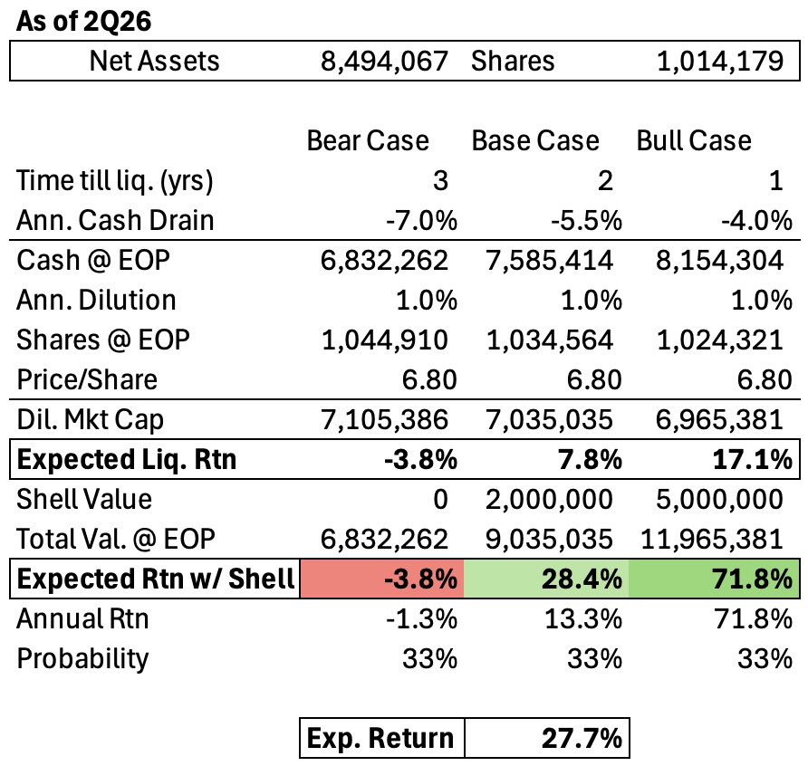

Value investing traditionally meant cigar butt investing. Finding discarded companies trading adequately below fair value (as measured by tangible assets) and wresting them from the grip of Mr. Market for one last “puff” of the cigar. There are many reasons this is not practiced at scale today: information efficiency, increased competition, and the increasing importance of intangible assets, especially software.
But I am naïve—and one pattern I’ve recognized over time is that the investment philosophies of many of the great value investors today (value has of course evolved since Benjamin Graham) started with cigar butt investing. This is true of Warren Buffett, Seth Klarman, Nick Sleep, and many others.
So, I figure I should also start there?
I found
Saker Aviation Services (OTC: SKAS) by reading some earlier investment letters from Tim Eriksen’s fund, Cedar Creek Partners, and after some digging into the company, two things stood out:
1) Beginning in 1Q25, Saker stopped producing material revenue, and
2) Eriksen owns ~17% of the company and is actively buying more shares*
That was enough for me to do some more research, reach out to Tim, and now, write this memo.
Investment Thesis: Saker Aviation Services is a microcap company with no substantial operations, trading ~20% below net cash & investments, with additional upside from a potential sale of the company shell once liquidated. There is a clear catalyst given seasoned microcap activist Tim Erikson owns a double-digit and growing stake of the company. I expect a probability weighted IRR north of the mid-20s, with significant downside protection from the net cash balance.
Company Overview: Starting in late 2008, Saker entered into a concession with the City of New York to operate the Downtown Manhattan Heliport. In exchange for a portion of their revenue, Saker received a local monopoly and continued operating the heliport until the concession agreement was terminated on March 29, 2025.
After losing their contract, Saker began providing “strategic financial advising services to clients,” which has yielded $30k in revenue during 1H26. Management has not disclosed much about this, but I don’t view it as a serious future for Saker given the revenue is immaterial and the C-suite doesn’t have any relevant experience in financial advising.
Thesis 1: Buying a dollar for 80 cents.
If you buy Saker stock, you can buy $7.74 in net cash & investments per share for $6.48, or a 19.3% discount. Given the clear catalyst, I don't view this as a value trap. Which means this is a very likely 20% return with significantly limited downside given the asset value. Of course, if you can pick up a few shares under $6, your margin of safety grows significantly.
It’s also worth noting that management has done a decent job of not issuing excess shares or wasting cash since operations ceased in 1Q25. Over a year and a quarter, diluted share count has grown 0.17% and cash + investments have decreased by 5.4%.
Thesis 2: Upside from the Sale of the Company Shell.
The second source of returns comes from the potential monetization of the company shell. Saker offers a clean, SEC-reporting, OTCQB Shell. OTCQB is the second tier of OTC listings, although it seems likely that Saker will be demoted to the Pink Sheets (the third and lowest rung) after they are officially deemed a shell company.
What’s a shell worth? Scott’s Liquid Gold ($SLGD) is an example of another pink sheet shell that was successfully monetized in late 2023 by Maran Capital Management, as detailed in this quirky
blog post and Maran’s own
report. Unlike Saker, SLGD started with operating divisions and an indebted balance sheet that Dan Roller of Maran had to clean up.
Eventually, Roller made a deal with mutual fund/ETF manager Horizon Kinetics. In exchange for the shell, SLGD shareholders would hold 3.5% of the combined company. At an initial $466mn valuation, the stake was worth $16.3M.
If the Saker shell was valued anywhere near there, it would represent $10-$15 in potential upside, or a return well north of 200%. And unlike SGLD, management can skip the additional complexity of cleaning up the balance sheet.
Catalyst for Monetization:
I mentioned Tim Eriksen as the catalyst for this investment. He owns 17.5% of the company and manages Cedar Creek Partners, which invests in microcaps and has returned 15% per annum since 2006. He acquired another 5,500 shares of the company as per a recent Form 4 dated 8/17/26. Perhaps he would acquire more if the shares were more liquid.
I reached out to Tim to understand what he was doing with the position, and he gave me this response:
“As for Saker. If they liquidate I get a decent gain. I could try to buy out majority shareholder and then try to see if anyone wants to merger into the clean shell. Scott’s Liquid Gold got something like 3 to 5 million for the clean shell, that is another $3 to $5 per share. Or gain control and try to use it as an acquisition vehicle. There are lots of possibilities.”
So, the activist is on our side. And he has a solid track record of acquiring stakes in weakly governed microcaps, getting representation, and eventually monetizing them:
1. Eriksen launched a proxy fight at Solitron Devices (SODI) in 2015, and eventually became CEO in 2017. At the time, he owned 6.7% of the company or a position of about $670k. Since then, the stock has done tremendously (23.9% CAGR over 10 years), and now there is an ongoing process to sell the company.
2. In 2019 Eriksen became a board member of TSR Inc. (TSRI), eventually selling the company in 2024 for $13.4 compared to an initial price of $3.59, for a 33% return per annum.
3. Beginning in 2021, he led a proxy battle to gain control of PharmChem (PCHM), ultimately becoming the chairman. At the time owned approximately 3.8% of the company or a position just under $1mn. This eventually led to a sale of the company for an estimated 11.3% return per annum over 4 years.
4. In 2024, he lost a proxy vote to take control of Paragon Technologies (PGNT).
If (and this is a big if) we assume his AUM is ~$40mn, his position in Saker would represent about 3% of AUM This seems directionally correct, given his concentrated approach to portfolio management. Although not a huge position, this $1.1mn stake is in line with position sizes before previous activist events and leads me to believe (in addition to his word) that he will attempt to gain control of Saker.
Risks:
The largest risk is that the current CEO owns 30% of the company and prevents Tim, or you, my dear reader, from liquidating the company. He could do this by expanding into other business lines or starting a proxy fight vs Tim. Having not spoken with the CEO, I don’t understand his motivation.
As with all companies <$10mn trading OTC, there is also very low liquidity at less than <$3k vol/day. This is a risk but also part of the reason why this opportunity exists.
Valuation:
I valued Saker Aviation using a DCF—quite a weird one because there is no income and only a steady drain of net assets.
Since ceasing operations, avg diluted share count has grown by 0.17% per annum, and net assets have fallen 5.4%. In my base case, I model a 5.5% y/y drain and a 1% increase in share count y/y for 2 years. Hopefully now that operations have been wound down, cash drain will slow significantly.
I valued the shell at $2mn in the base case, $5mn in the bull, and 0 in the bear case. This valuation was taken from Eriksen’s message, and I’m not entirely sure how he derived it, but I figured I ought to be more conservative than less. As previously stated, using a valuation anywhere near the SGLD transaction would make returns parabolic.
Taken together, this leads to a 28.4% cumulative return in the base case, and assuming the company is liquidated in 2 years, a 13.3% annual return. If we ascribe a 1/3 chance of either a base, bull, or bear outcome, that brings the probability weighted expected annual return to 27.7%.
It’s hard to value Saker Aviation if it becomes an acquisition vehicle for Erikson, but given his track record, I’m strapping in for the ride :). Additionally, if a proxy fight is launched, I expect the stock to appreciate closer to book value, creating a selling opportunity due to the potential realization of the catalyst.

To reiterate:
Saker Aviation Services is a microcap with no substantial operations, trading ~20% below net cash & investments, with additional upside from a potential sale of the company shell once liquidated. There is a clear catalyst given seasoned microcap activist Tim Erikson owns a double-digit and growing stake of the company.
I expect a probability weighted IRR well north of the mid-20s, with significant downside protection from the net cash balance.
*This is actually 3 things, but who’s counting?